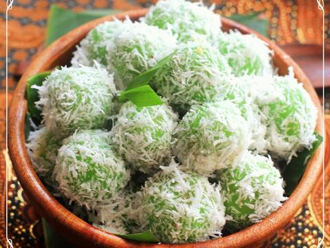

Klepon adalah makanan tradisional Indonesia yang sering dikenal dengan jajan pasar. Makanan ini terbuat dari tepung beras ketan yang dibentuk menjadi bola-bola kecil dan diisi gula merah lalu direbus dalam air mendidih dan dilapisi parutan kelapa. Info Lebih Lanjut. |
 |
Berikut ini adalah bahan-bahan yang diperlukan dalam membuat Klepon
| Bahan | Komposisi |
| Ketan Putih | 450 gr |
| Tepung Beras | 50 gr |
| Garam halus | 1/2 sdt |
| Gula Merah (halus) | secukupnya |
| Air | secukupnya |
| Daun Pandan | secukupnya |
| Kelapa Parut (untuk taburan) | secukupnya |
| Pasta Pandan | secukupnya |
1. Campur Tepung Ketan dan Tepung Beras, aduk sampai rata
2. Masukan Pasta Pandan secukupnya ke dalam campuran, aduk sampai rata
3. Tuang air sediikit demi sedikit sambil diuleni hingga adonan pas
4. Bentuk adonan menjadi bulatan-bulatan lalu beri isi gula merah
5. Rebus adonan yang sudah dibentuk dalam air mendidih sampai matang
6. Sambil menunggu matang, campurkan kelapan parut dengan sedikit garam lalu dikukus sebentar
7. Angkat adonan, tiriskan, lalu gulingkan di kelapa parut yang sudah dikukus hingga merata
8. Klepon siap dinikmati, yay ^.^
Bagaimana Pendapat Anda?